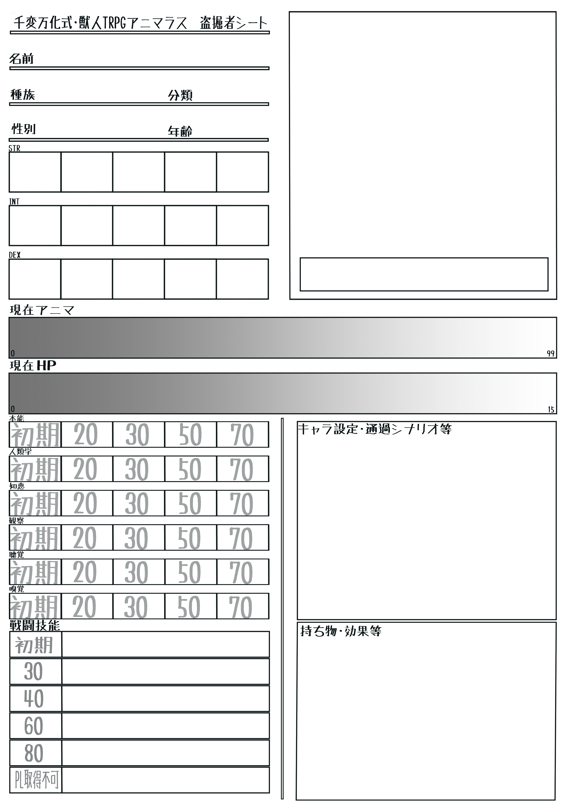
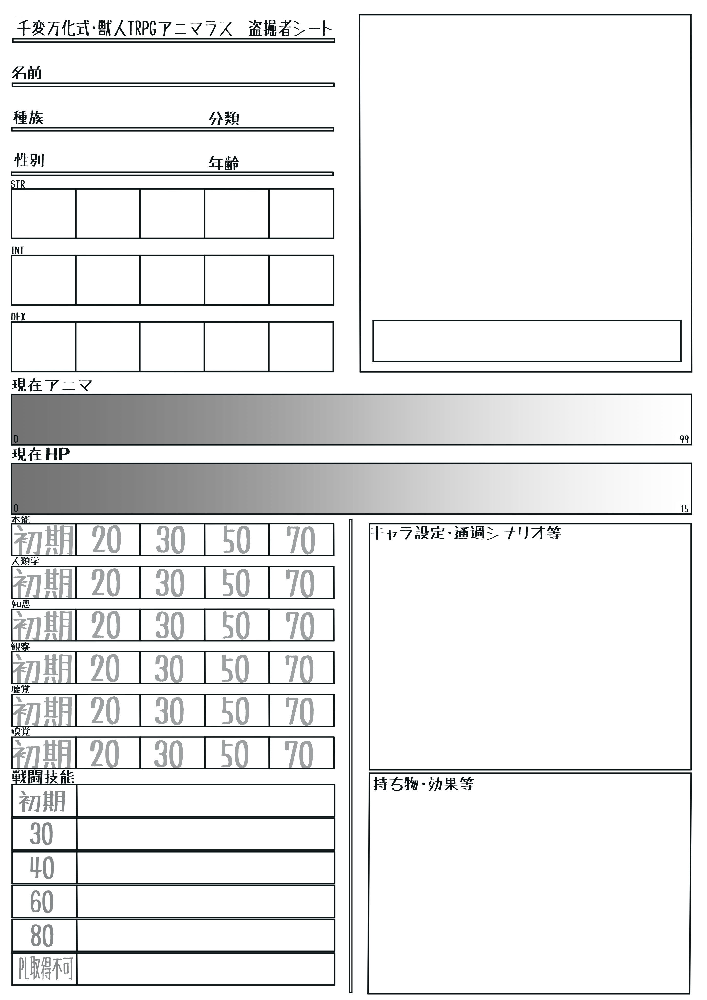

 
アニマラスキャラシめーかー（初期作成限定版）
獣人TRPGアニマラスの非公式キャラクターシートを作れるツールです。
立ち絵・キャラクター設定などは入力不可能なので保存後に改めて記入してください。
Step 1. 盗掘者の名前を決めよう！ :
Step 2. 職業を決めよう！ :
傭兵（マーシナリー）
機械技師（エンジニア）
学者（スカラー）
医者（ドクター）
盗賊（シーカー）
商人（マーチャンター）
Step 3. 種族を決めよう！ :
この動物は :
肉食獣
草食獣
雑食獣
Step 4. 盗掘者の性別を決めよう！ :
Step 5. 盗掘者の年齢を記入しよう！ :
Step 6. 戦闘技能の技名を決めよう！ :
Step 7. 追加で技能を一つ取ろう！ :
本能
人類学
知恵
観察
聴覚
嗅覚
戦闘技能
追加で技能を取らない
最後に、この盗掘者のイメージカラーは？ :
赤色
橙色
黄色
黄緑色
緑色
青色
紫色
桃色
水色
灰色
黒色
設定完了！
ここにチャパレが出力されるよ！ :
チャパレをコピー
ここにココフォリア用のキャラが出力されるよ！ :
ココフォリアキャラクターをコピー
Sorry, your browser does not support canvas.